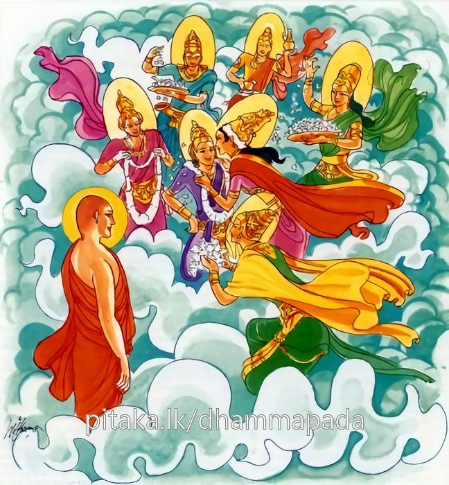
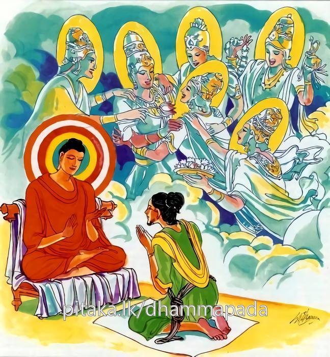

16-9 නන්දිය හා රේවතී
මෙම කතාව ධම්මපද අටුවාවෙන් ද කියවන්න.
චිරප්පවාසිං පුරිසං දූරතො සොත්ථිමාගතං
ඤාතිමිත්තා සුහජ්ජා ච අභිනන්දන්ති ආගතං.
බොහෝ කලක් පිට රට ගොස් වුසූ, දුරු රටැ සිට සුවසේ ආ පුරුෂයක්හු දැක නෑයෝ ද මිතුරෝ ද යහළුවෝ ද ඔහුගේ පැමිණීම සාදර ව පිළිගනිත්.

තථෙව කතපුඤ්ඤම්පි අස්මා ලොකා පරං ගතං
පුඤ්ඤානි පතිගණ්හන්ති පියං ඤාතීව ආගතං.
එ පරිද්දෙන් ම කළ පින් ඇති මෙ ලොවින් පරලොවට ගිය පුරුෂයා ද, ඔහු කළ කුසල්හු දුර සිට ආ ප්රියයකු පිළිගන්නා නෑයන් සේ පිළිගන්නාහු ය.

බරණැස් නුවර සැදැහවත් කුලයෙක් විය. එහි පුතෙක් උපන. හේ නමින් නන්දිය නම් ය. මවුපියන් සේ ම සැදැහැවත් ය. තුනුරුවන් කෙරෙහි පහන් ය. මහාසඞ්ඝයාට උවැටන් කරන්නේ වී ය. ඔහු වැඩි විය පැමිණි කල්හි මවුපියෝ තම ගෙය ඉදිරියෙහි වූ ගෙයි මයිලනුවන්ගේ දුවක වූ රේවතී නම් කුමරිය නන්දිය කුමරුට බිරිය කොට කැඳවා ගෙන එන්නට කතාබස් කළහ. ඕ තොමෝ සැදැහැ නැත්තී ය. නො දෙන සුලු ය. එහෙයින් නන්දිය එබන්දියක බිරිය කරන්නට කැමැති නැත, නන්දියගේ මවු, රේවතියගේ ගෙට ගොස් “දුව! තී අපගේ ගෙට භික්ෂු සඞ්ඝයා වහන්සේ වැඩම කොට වළඳන්නට හිඳිනා තැන් ගොම පිරිබඩ කොට අසුන් පණවා තබා නම් පාත්රාධාර පිරිසිදු කොට තබා නම් භික්ෂූන් වහන්සේ වැඩම කළ කල්හි පාත්ර ගෙණ වඩා හිඳුවා ඩබරායෙන් පැන් පෙරා තබා වළඳා අවසන් කළ විට පාත්ර ගෙණ සෝදා නම් එසේ ඒ කටයුතුවල යුහුසුලු වන්නී නම් මපුතු සිත් ගන්නට සමර්ත්ථ වන්නීය” යි කීහ.
ඕ තොමෝ එතැන් පටන් නන්දියගේ ගෙට ගොස් ඒ සියල්ල මැනැවින් කළා ය. එකල නන්දියගේ මවුපියෝ “පුත! ඈ අපගේ අවවාදය පිළිගෙණ දැන් ඒ කටයුතු සැදැහැතිව පහන් සිතින් කරන්නීය” යි දැන්වූහ. නන්දිය එය පිළිගත් පසු දවස් නියම කොට ආවාහය කළහ. ඉන්පසු නන්දිය, බිරිය අමතා “සොඳුර! තී භික්ෂුසඞ්ඝයාටත් මාගේ මවුපියන්ටත් මෙසේ උවැටන් කරන්නී නම් මේ ගෙයි සියලු සම්පත් තිට වන්නී ය, එහෙයින් ඒ කටයුතුවල යුහුසුලු වන්නැ” යි කීය. ඕ තොමෝ ද “මැනැවැ” යි පිළිගෙණ ටික කලක් සැදැහැ ඇත්තියක සේ හිමියාට උවැටන් කරන්නී දෙපුතු කෙනකුන් වැදූ ය. මේ අතර නන්දියගේ මවු පියෝ කලුරිය කළහ. ගෙයි තිබූ සියලු සම්පත් නන්දිය අතට පත් වූය. නන්දිය ද මවුපියන් කලුරිය කළ දා සිට මහා දානපතීව භික්ෂු සඞ්ඝයා වහන්සේට දන්වැට තැබී ය. දුගී මගී යාවකාදීන්ට ද දන් දුන්නේ ය.
ඔහු මෑත කාලයෙහි බුදුරජුන් වෙතින් බණ අසා ආවාස පිදීමෙහි අනුසස් සලකා ඉසිපතන මහාවිහාරයෙහි ගබඩා සතරකින් යුත් ගෙයක් කරවා ඇඳ පුටු ආදිය ගෙන්වා තබා අතුරුවා ඒ ආවාස ගෙය පූජා කරන්නට බුද්ධ ප්රමුඛ මහා සඞ්ඝයා වහන්සේට දන් දී අවසන් කොට බුදුරජුන්ගේ ශ්රී හස්තයෙහි පැන් වක් කෙළේ ය. බුදුරජුන්ගේ ශ්රී හස්තයෙහි පැන් වක්කරත් ම ඔහුට තව්තිසා දෙව්ලොව සියලු දිශාවන්හි දොළොස් යොත්තක් තැන් පැතිර ගත් යොදුන් සියයක් උස් වූ සත්රුවන් මුවා දෙවඟනන් ගෙන් පිරුණු දෙව් විමනක් පහළ වී ය.
මේ අතර කාලයෙහි දවසක් මහාමෞද්ගල්යායන මහා ස්ථවිරයන් වහන්සේ දෙව්ලොව චාරිකාවට වැඩ ඔහුගේ විමන අසල සිටියාහු තමන් වෙත පැමිණි දෙව්පුතුන්ගෙන් “මේ දෙවඟනන්ගෙන් අතුරු සිදුරු නැතිව පිරී ගත් දෙව්විමන කවරක්හුගේදැ” යි ඇසූහ. “ස්වාමීනී! නන්දිය නම් ගැහැවි පුතු විසින් පසුගිය දා ඉසිපතනයෙහි ශාස්තෘන් වහන්සේට විහාරයක් කරවා පුදන ලද්දේ ද, ඔහු පිණිස මේ විමන මෙහි පහළ විනැ” යි ඒ දේවපුත්රයෝ විමන් හිමියා දක්වමින් කියා පෑහ. එහි සිටි දිව්යප්සරාවෝ ද උන්වහන්සේ දැක විමනින් බැස “ස්වාමීනි! අපි නන්දියගේ මෙහෙකරු දෙවඟනෝ ව මෙහි උපන්නෙමු, එහෙත් ඔහු නො දක්නමෝ කළකිරුණෝ වම්හ, ස්වාමීනි! මිනිස් සැපත් හැර දෙව්සැපත් ගැණීම, මැටිපයක් බිඳ දමා රන්පයක් ගන්නා සේ ය, එහෙයින් මෙහි එනු පිණිස ඔහුට කියනු මැනැවැ” යි දන්වා සිටියහ.
මෞද්ගල්යායන මහාස්ථවිරයන් වහන්සේ දෙව්ලොව සැරි සැරුම් අවසන් කොට දෙව්ලොවින් බැස බුදුරජුන් වෙත පැමිණ “ස්වාමීනි! කළ පින් ඇති මිනිසුන් මිනිස් ලොව ජීවත්ව සිටිය දී ම ඔවුන්ට දෙව්ලොව විමන් පහළ වේ දැ?” යි ඇසූහ. “මුගලන්! තමන් විසින් ම ඒ දක්නා ලද්දේ නො වේ ද? ඇයි, මාගෙන් විචාරණු?” යි බුදුරජුන් අසා වදාළ කල්හි “ස්වාමීනි! එසේය, මා විසින් දක්නා ලදැ” යි මුගලන් තෙරණුවෝ සැලකළහ. එවිට බුදුරජානන් වහන්සේ “මුගලන්! මේ කුමක් කියහු? බොහෝ කල් නොරට විසූ පුතකු හෝ සොහොයුරකු හෝ නොරටින් එනු ගම්දොර සිටි කිසිවෙක් දැක වහා දුව ගොස් ‘අසුවලා ආයේ ය’ යි නෑයන්ට දන්වන්නේ ය, එකල ඔහුගේ නෑයෝ තුටු පහටුව වහා ගෙන් නික්ම ගොස් ‘දරුව! ආයෙහි?’ යි ඔහු සතුටින් පිළිගනේ ය, මුගලන්! එපරිද්දෙන් මෙලොව කළ පින් ඇති ස්ත්රියක හෝ පුරුෂයකු හෝ මෙලොව හැර පරලොව ගිය කල ඔවුන් දසවැදෑරුම් දෙව්පඬුරු ගෙණ මම පළමු පිළිගණිමි, මම පළමු පිළිගණිමි, යි දෙවියෝ ඉදිරියට පැමිණ සතුටින් පිළිගණිත්” යි වදාරා මේ ධර්ම දේශනාව කළ සේක.
චිරප්පවාසිං පුරිසං දූරතො සොත්ථිමාගතං,
ඤාතිමිත්තා සුහජ්ජා ච අභිනන්දනති ආගතං.
.
තථෙව කතපුඤ්ඤම්පි අස්මා ලොකා පරං ගතං,
පුඤ්ඤානි පතිගණ්හන්ති පියං ඤාතීව ආගතන්ති.
බොහෝ කල් නො රට විසූ පුරුෂයකු, දුර රටින් සුවසේ ආවහු (දැක) නෑයෝ ද මිතුරෝ ද හිතවත් යහළුවෝ ද (ඒ) ආවහු සතුටින් පිළිගණිත් ද,
එපරිද්දෙන් කළ පින් ඇත්තකු මෙලොවින් පරලොවට ගියහු (ඔහු විසින් කළ) පුණ්යයෝ (දුර සිට) ආ ප්රිය නෑයකු පිළිගන්නා වූ නෑයන් මෙන් පිළිගණිත්.
චිරප්පසවාසිං = බොහෝ කල් නො රට විසූ.
යමෙක් යම් රටෙක නූපන්නේ නම් ඔහුට ඒ රට නො රට වන්නේ ය. එබඳු තමන් උපන් රට හැර අන් රටකට ගොස් කුමකට වුව ද එහි රැඳී සිටියේ චිරප්පවාසී නමි.
පුරිසං = පුරුෂයකු.
පුරිස නම්: ලෝකයෙහි උසස් තැන ගත්තේ ය. දෙව්බඹුන් පරදවා ගුණ දහම් පිරීමෙන් නැගී සිටියේ ද පුරිස් තෙමේ ය. කුමක් නිසා එසේ කියා ද? යත්: සම්මා සම්බුදුවනු පුරුෂක්යහු ම, පසේබුදුවනු පුරුෂයක්හු ම, සක්විතිවනු පුරුෂයක්හු ම අයත් කොට සිටියේ ද එහෙයිනි. “පුරි උච්චෙ ඨානෙ සෙති පවත්තති, අථ වා නිස්සයස්සාභිලාසං පූරෙති, පුං අපායං රිසති හිංසති වාති = පුරිසො” යනු එහිලා ඒ ඒ ඇදුරන් විසින් කළ විවෘතියි.
දූරතො = දුරින්. දුර සිට.
සොත්ථිං ආගතං (දිස්වා) = සුවසේ ආවහු (දැක)
ඤාතිමිත්තා (ච) = නෑයන් හා මිතුරෝ (ද) [1] [2]
සුහජ්ජා ච = හිතවත් යහළුවෝ ද.
සුහජ්ජයෝ නම්: හිතවතුන් කෙරෙහි මැනැවින් හිතවත්ව වසන්නෝ ය. හිතවතුන්ගේ එ ලොව මෙ ලොව දියුණුවෙහිලා දව රෑ දෙක්හි හිත දී දුක් සැප දෙක්හි සමාන පැවැතුම් ඇත්තෝ ය. “සුහදයභාවෙන සුහජ්ජා” යනු කීයේ එහෙයිනි.
අභිනන්දනති ආගතං = ආවහු පිළිගණිත්. ඊමට සතුටු වෙත්.
ගෙට ආවහු ‘ස්වාගත’ යි වදන් පමණින් හෝ සිප ගැණිම් පමණින් හෝ දොහොත් නගා වැඳීම් පමණින් හෝ නන් වැදෑරුම් වූ පඬුරු එළවීමෙන් පිළිගණිත්. ඔහුගේ ඊම ගැන සතුටු වෙත්. “නං සාගතන්ති වචනමත්තෙන වා අඤ්ජලීකරණමත්තෙන වා ගෙහං සම්පත්තං පන නානප්පකාරපණ්ණාකාරාභිහරණ වසෙන අභිනන්දනති” යනු අටුවා.
තථා එව = එ පරිද්දෙන් ම. ඒ ලෙසින් ම.
කවර පරිදි ද? යත්: කලක් පිට රට වැස ගෙට පැමිණියකු, නෑ මිතුරු සුහදයන් විසින් ප්රිය වචනයෙන් සිප වැළඳ ගැණීමෙන් ආචාර කිරීමෙන් පඩුරු එළවීමෙන් පිළිගන්නා පරිද්දෙනි.
කතපුඤ්ඤං අපි = කළ පින් ඇත්තහු ද. [3]
අස්මා ලොකා = මෙ ලොවින්. මේ මිනිසත් බවෙන්.
පරං ගතං = පරලොවට ගියහු.
පුඤ්ඤානි පතිගණ්හන්ති = පුණ්යයෝ පිළිගණිත්. [4]
මෙහි පරං යන්නෙන් ගැනෙනුයේ දෙව්ලොව ය. කළ පින් ඇත්තකු පරලොව ගිය විට මවු පිය තැන්හි සිටියා වූ ඔහු විසින් කරණ ලද පුණ්යයෝ දිව්ය වූ ආයුෂ - වර්ණ - සුඛ - යශස - අධිපති භාවයන් හා දිව්ය වූ රූප - ශබ්ද - ගන්ධ - රස - ස්ප්රෂටව්ය යන දස වැදෑරුම් පඬුරු පිළිගන්වා ඔහු පිළිගණිත්. මේ මෙය අටුවාව කියූ සැටි: “තෙනෙවාකාරෙන කතපුඤ්ඤම්පි පුග්ගලං ඉමස්මා ලොකා පරලොකං ගතං දිබ්බං ආයුවණ්ණසුඛයසආධිපතෙය්යං දිබ්බං රූපසද්දගන්ධරසඵොට්ඨබ්බන්ති ඉමං දසවිධ පණ්ණාකාරං ආදාය මාතාපිතිට්ඨානෙ ඨිතානි පුඤ්ඤානි අභිනන්දථාති පතිණ්හන්ති” යනු.
පියං ඤාතී ඉව ආගතං = (හෙට) පැමිණි ප්රිය නෑයකු පිළිගන්නා නෑයන් මෙන්.
මෙ ලොවදී ගෙට පැමිණි ප්රිය නෑයකු පිළිගන්නා සෙසු නෑයන් මෙන් පිළිගණිත්.
ධර්මදේශනාවගේ අවසානයෙහි බොහෝ දෙන සෝවන් ඵලාදියට පැමිණියාහු ය.
නන්දිය වස්තුව නිමි.